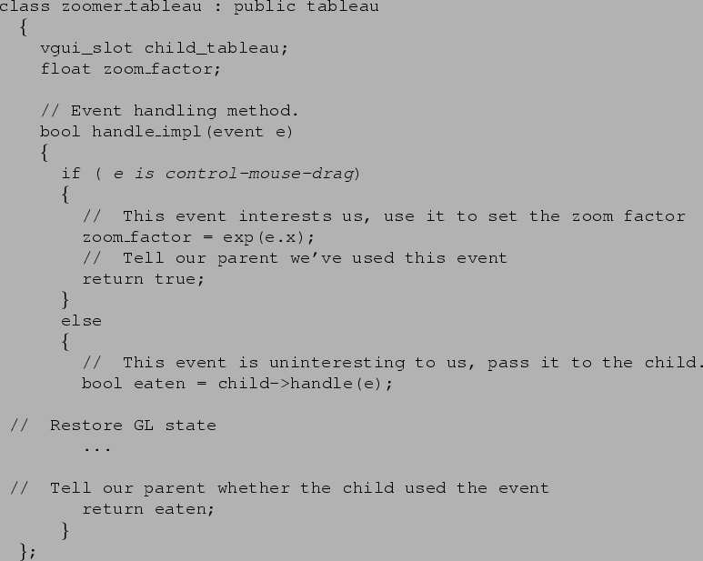

Next: Types of tableaux provided
Up: Tableaux
Previous: Multiple panes
Draw is an event rather than a virtual function so that
all the work of the tableau is done in the handle_impl function.
The reasoning here is that a tableau should generally be in the same
state when drawing as when handling other events. For example, a scribble
program which plots points under the mouse should draw the points in
the same coordinate system as it recieved them. If draw and handle
were different functions, the implementer would have to ensure that
the state-handling code was identical in both cases.
The zoomer tableau must likely wishes to capture some mouse events in order
to easily change the image pan and zoom. Each tableau implements an event
handler which takes a vgui_event structure, and either uses
the event that it defines, or passes it to its children. In the zoomer
example, this might be written

Target Junior User
2000-10-31